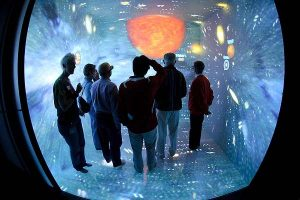

Tomogram Project (CAVE)

Tomogram Project is a mixed-reality tour to the inside structure of a plant cell.
It is deployed on the CAVE system- a six-face projection-based VR display. Its functioning depends on the synchronization of 6 computers.
We Hosted a visiting tours in Wisconsin Institute for Discovery and displayed the project to 50 students and scholars.
